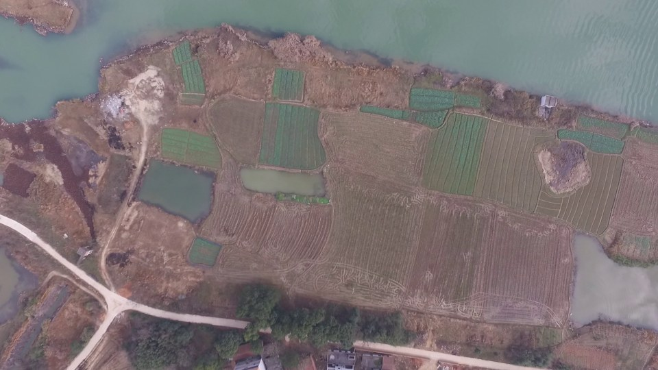
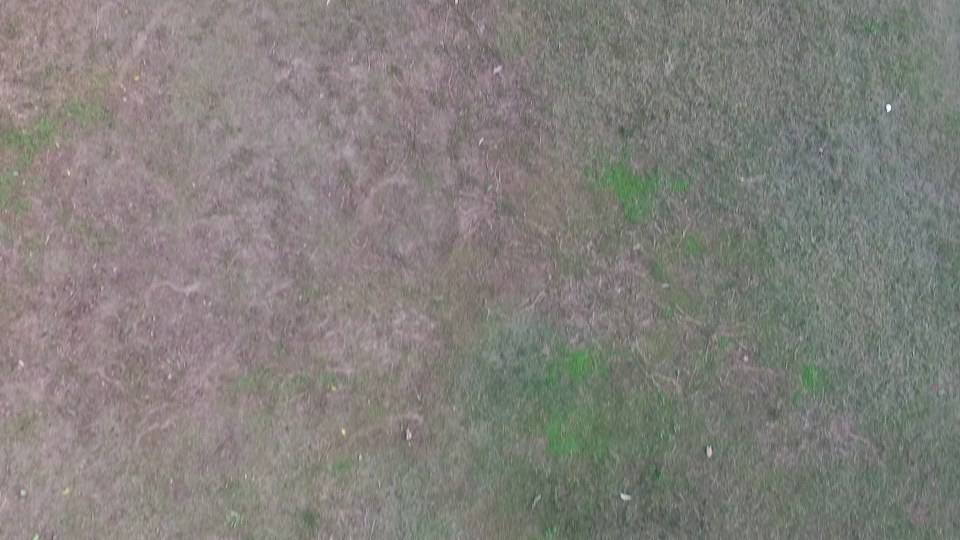
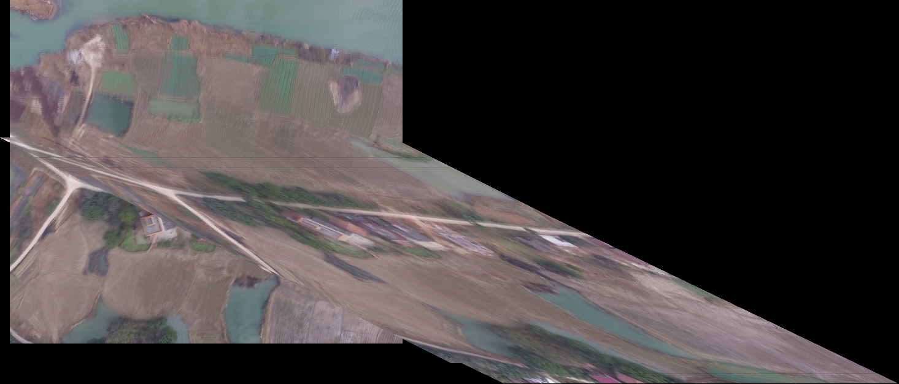
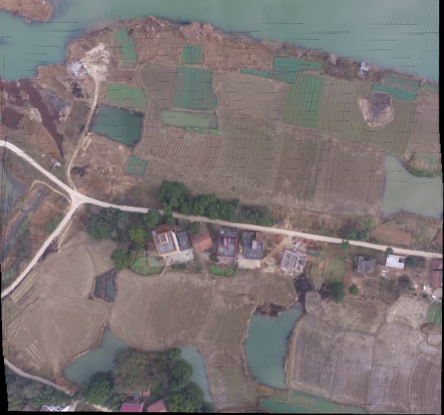
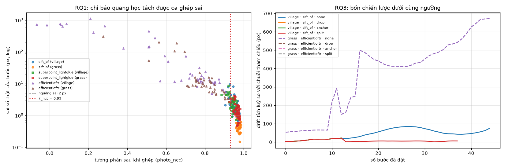

Khảo sát đánh giá độ bền vững của các bộ ghép đặc trưng và đề xuất giải pháp ghép ảnh UAV thích ứng rủi ro trên máy tính cá nhân
Ghép chuỗi video UAV góc thẳng đứng (nadir) thành bản đồ 2D liên tục (không georeference) phục vụ cứu hộ, nông nghiệp và trinh sát nhanh trên thiết bị tính toán giới hạn (laptop cá nhân).
Ghép tuần tự từng cặp ảnh ($H_{0 \to t} = H_0 \cdot H_1 \dots H_t$) khiến sai số nhỏ ở từng frame bị nhân dồn. Khi gặp mặt cỏ trơn nhẵn hoặc quay gắt, bản đồ bị vặn xoắn và vỡ nát hoàn toàn.
Chỉ báo rẻ tiền cấp bước nào (inliers, RMSE, tương quan quang học) dự báo chính xác lỗi đăng ký?
Phân luồng 2 tầng (mặc định SIFT nhẹ; chỉ gọi Deep Learning khi rủi ro cao) tối ưu thế nào giữa chất lượng và độ trễ?
Khi đã gọi AI mà vẫn rủi ro, chiến lược nào (bỏ frame, rematch, tách submosaic) bảo toàn dữ liệu bản đồ?
Hwang et al. (2026), Li et al. (2023): Dùng SIFT/ORB + RANSAC thuần túy.
Kim & Kim (2025), LightGlue (2023): Dùng Transformer/GNN đối sánh đặc trưng.
Khoảng trống: Chưa có hệ thống nào tự đo rủi ro từng bước bằng chỉ số rẻ tiền để **phân luồng thích ứng tài nguyên**.
| Thuộc tính kỹ thuật | phantom3-village | phantom3-grass |
|---|---|---|
| Độ phân giải / Kênh | 1920 × 1080 (Full HD, RGB) | 1920 × 1080 (Full HD, RGB) |
| Tiêu cự camera ($f_x, f_y$) | 1220.0, 1220.0 | 1220.0, 1220.0 |
| Độ cao giả định (Plane=) | ~194 m (mặt đất phẳng) | Bay thấp sát đất |
| Số lượng Keyframes | 406 frames (Dài 7.67 km) | 648 frames (Lượn cục bộ) |
| Bước nhảy bay trung bình | 18.9 m / bước (Max 36.8m) | 0.82 m / bước (Max 27.3m) |
| Đặc trưng bề mặt | Đa dạng góc cạnh | Mất vân, lặp vân |
* Dữ liệu do GS. Shuhui Bu (NWPU) công bố (IROS 2016), keyframes đã được undistort sẵn.


Ở tầng cặp ảnh lẻ, mô hình EfficientLoFTR báo cáo số liệu cực đẹp: >2.000 inliers, RMSE nội tại chỉ 0.4px. Nhưng khi tích luỹ qua 20 frame:
SIFT, ORB, LightGlue (SIFT/SP), XFeat (MNN/LighterGlue) đều ghép thành công 20/20 frame, độ phủ 96–99%. XFeat-MNN chạy nhanh nhất (~2.0s trên CPU cho cả 20 frame).


Nhóm phát hiện toạ độ trong dataset thực chất do SLAM đơn kính tái dựng, không phải GPS độc lập. Ở cảnh `grass`, toạ độ bị suy biến khiến công thức chiếu nổ tung. Do đó không thể dùng để làm Ground Truth đo mét.
So sánh ma trận tích lũy tuần tự ($H^{\text{chain}}_{i \to 0}$) với ma trận ghép thẳng trực tiếp ($H^{\text{direct}}_{i \to 0}$) bằng SIFT ảnh gốc trên 5 điểm mốc (4 góc + tâm). Đơn vị là pixel ảnh gốc.
| Mô hình | Drift village (px) | Drift grass (px) |
|---|---|---|
| sift_bf (Mức nhiễu nền) | 46.7 px | 1.7 px |
| sift_lightglue | 47.0 px | 1.8 px |
| xfeat_lighterglue | 47.6 px | 3.4 px |
| superpoint_lightglue | 61.1 px | 1.8 px |
| orb_bf | 73.2 px | 2.8 px |
| efficientloftr | 1311.5 px (28×) | 62.9 px (37×) |
* Đo trên cùng chuỗi 20 frame. EfficientLoFTR trôi gấp 28–37 lần mức nền của phương pháp!
Frame mới được ghép nhanh bằng SIFT ở 640px. Sau khi chiếu, tính hệ số tương quan chéo chuẩn hóa (Photo-NCC):
- Nếu An toàn: Dán frame vào bản đồ, không tốn thêm tài nguyên.
- Nếu Rủi ro: Kích hoạt SuperPoint + LightGlue xử lý riêng cho bước đó để vượt qua vùng mất vân.
Nếu bước ghép vẫn rủi ro sau khi gọi AI (địa hình hỏng hoàn toàn): Chủ động kích hoạt Tách Submosaic để cô lập lỗi, không để ma trận lỗi bẻ gãy chuỗi bản đồ tiếp theo.
| Chỉ báo rẻ | Tương quan Spearman (ρ) | AUC bắt lỗi | Đánh giá |
|---|---|---|---|
| photo_bad_frac | +0.759 | 0.855 | Rất nhạy |
| rmse_px (RANSAC) | +0.788 | 0.839 | Dễ bị lừa |
| overlap_ratio | -0.634 | 0.788 | Khá tốt |
| photo_ncc | -0.636 | 0.770 | Rất tốt (chốt) |
| inlier_ratio | -0.389 | 0.726 | Dự phòng |
| inliers (Số điểm chuẩn) | +0.239 | 0.409 | Ngược chiều |
| matches (Số điểm nối) | +0.251 | 0.402 | Vô dụng |
| hull_area_ratio | +0.005 | 0.571 | Đoán mò |

| Chính sách chạy | Tỷ lệ gọi AI | Thời gian | Drift cuối |
|---|---|---|---|
| Chỉ dùng SIFT nhẹ | 0% (0/45) | 3.2 s | 75.3 px |
| Chỉ dùng AI (SuperPoint+LG) | 100% (45/45) | 60.4 s | 82.4 px (tệ hơn!) |
| Phân luồng đề xuất (τ=0.93) | 16% (7/45) | 13.3 s | 28.5 px (Tốt nhất) |
| Phân luồng + Leo thang 1080p | 16% (7/45) | 73.6 s | 35.8 px |
- Bật AI toàn phần cho mọi frame không hề tối ưu: Chậm gấp 19× nhưng bản đồ trôi tới 82.4 px (do đặc trưng thô ở 640px tích tụ sai số).
- Phân luồng thông minh ở τ = 0.93: Chỉ gọi AI ở 16% bước khó, giúp giảm 62% độ trôi và chạy nhanh gấp 4.5× so với chạy AI toàn phần!
Quét lưới τ từ 0.90 đến 0.99 với ngân sách leo thang tối đa 25%:
Tại 7 bước khó, leo thang ở ảnh gốc 1080p đạt sai số bước siêu nhỏ (1.49 px vs 4.51 px), nhưng tổng thời gian vọt lên 73.6 s. Phân luồng ở 640px là lựa chọn tối ưu cho máy tính cá nhân.
| Kịch bản bay / Cấu hình | Chiến lược | Frame giữ | Số mảnh | Drift max |
|---|---|---|---|---|
| village (SIFT nhẹ) | Không cứu | 46/46 | 1 | 84.6 px |
| Bỏ frame (Drop) | 14/46 | 1 | 21.7 px (Mất 70%) | |
| Rematch keyframe | 14/46 | 1 | 21.7 px (Mất 70%) | |
| Tách Submosaic | 46/46 | 8 | 21.7 px (Bảo toàn) | |
| grass (LoFTR vỡ) | Không cứu | 46/46 | 1 | 671.3 px |
| Tách Submosaic | 46/46 | 45 | 2.7 px |
Bỏ 1 frame làm khoảng cách tới frame sau xa gấp đôi $\rightarrow$ bước sau càng dễ bị gắn cờ $\rightarrow$ nở thành 32 lần trigger làm rụng mất 70% video! Tách submosaic là cách duy nhất bảo toàn 100% video.
1. Độ trôi Submosaic: Tách 8 mảnh thì drift nội bộ mảnh nhỏ (21.7 px), nhưng chưa có bước nắn chỉnh toàn cục (bundle adjustment) giữa các mảnh.
2. Tính chất cổng NCC: Photo-NCC là kiểm tra hậu đăng ký (sau khi đã tính $H$), chưa dự báo trước khi match.
3. Thước đo tham chiếu: Toàn bộ sai số là so với SIFT 4000 đặc trưng, chưa có toạ độ mặt đất thực địa tuyệt đối (GCP).
| Thời gian | Hạng mục công việc đã thực hiện | Kết quả đầu ra |
|---|---|---|
| Tuần 1–3 | Khảo sát văn hiến Wave 1–3, nộp đề cương | Proposal, RDR-0001 → 0004 |
| Tuần 4–5 | Xây dựng baseline SIFT/ORB & pilot LightGlue | Notebook 01 & 02 |
| Tuần 6–7 | Đấu trường 7 mô hình, phát hiện lỗi LoFTR | Notebook 03, HTML report |
| Tuần 8 | Kiểm chứng pose, chốt metric Chain vs Direct | Notebook 04, RDR-0007 |
| Tuần 9 | Hiện thực hoá 3 RQ, audit code & sweep ngưỡng | Notebook 05, RDR-0008 |